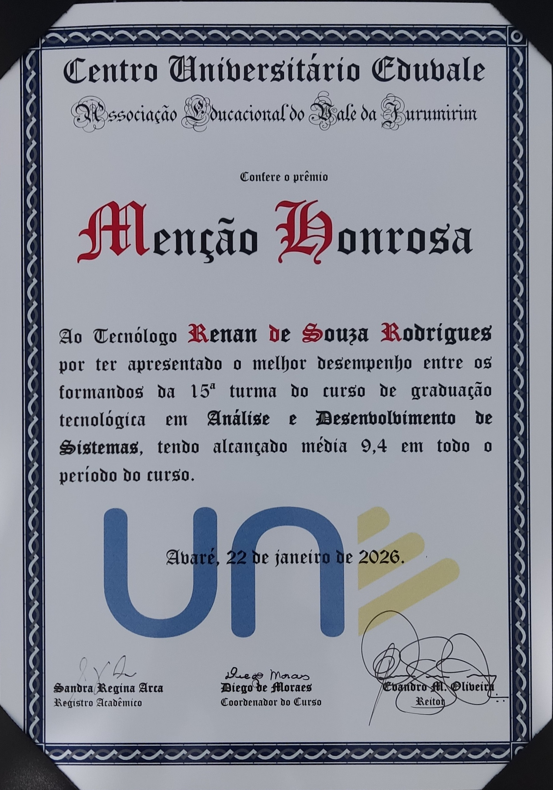

Backend Software Engineer | Full Stack (AI, Data & RPA) | 3+ anos de experiência
Especialista em sistemas escaláveis com Java/Spring Boot e Python/FastAPI. Experiência prática em arquiteturas distribuídas, pipelines de dados, modelos ML e automação inteligente. Documentado: otimizações de latência (80%), automações operacionais (80%) e visão computacional (90%).
~3 anos de experiência em desenvolvimento backend com Java/Spring Boot e Python/FastAPI. Trajetória evoluindo de Full Stack para especialista em dados, IA e automação robótica (RPA). Formação acadêmica em Análise e Desenvolvimento de Sistemas (média 9,4/10) com aplicação prática em projetos de alta complexidade.
vj-bots
vj-bots
vj-bots
Backend com FastAPI, JWT authentication, integração com Mercado Pago (webhooks) e WebSocket para notificações em tempo real. Deploy com Docker e CI/CD em Oracle Cloud.
Resultado: ~80% redução em esforço operacional manual
Pipeline end-to-end: coleta de dados com Selenium, processamento com OpenCV, classificação com YOLO e CNN (TensorFlow). Integração com API e automação de relatórios.
Resultado: ~90% redução no tempo de análise manual
Interesse em saber mais sobre meus projetos?
Ver Todos os ProjetosCentro Universitário UnEduvale - Avaré
Desempenho: Média geral 9,4/10 — Menção Honrosa
Reconhecimentos: Mérito Científico em Sistemas Integrados (CONINCE 2025) e Sistemas Embarcados (CONINCE 2025)

Menção Honrosa
Melhor Desempenho Acadêmico (9,4/10)
Mérito Científico
Sistema Integrado para Padarias
Mérito Científico
Sistemas Embarcados com Controle Remoto
São Paulo, Brasil | Disponível para Remoto, Presencial ou Híbrido